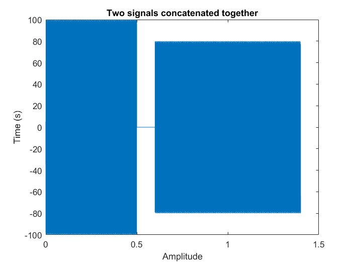
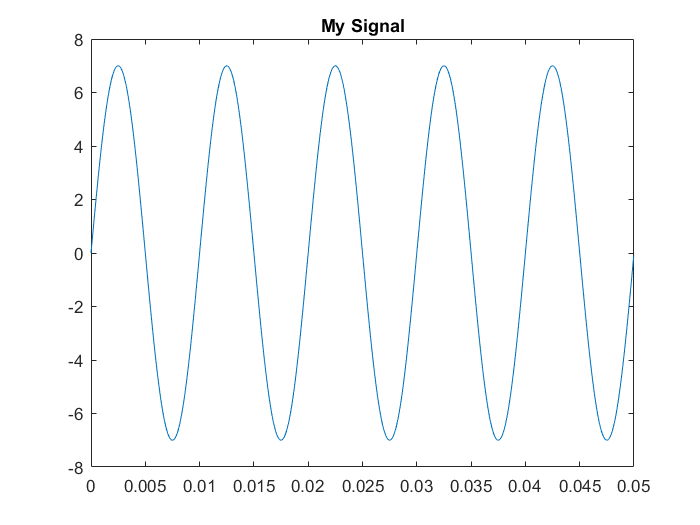

Matt Bachmeier
ECE 203 Lab 4: Synthesis of Sinusoidal Signals -- Music Synthesis 2/17/2017
Contents
Section 2.2(a)
fsamp = 11025; %sampling frequency x1 = syn_sin(800, 100, fsamp, (0.5 - pi/3), -pi/3); tt = 0:1/fsamp:0.5; %creates time axis with sinusoid above soundsc(real(x1)) %plays the created sinusoid
Section 2.2(b)
x2 = syn_sin(1200, 80, fsamp, (0.8 + pi/4), pi/4); soundsc(real(x2)) % The sinusoid from part a sounds lower in pitch than the % sinusoid from part b. This is probably due to the higher % frequency in x2 than x1.
Section 2.2(c)
N = 1102; %One tenth of the sample rate xx = [ x1, zeros(1,N), x2 ]; soundsc(real(xx)) %plays previous two signals in order with 0.1 second gap of silence.
Section 2.2(d)
% plot of the two signals concatenated together. tt = (1/fsamp)*(1:length(xx)); plot(tt,xx); title('Two signals concatenated together'); xlabel('Amplitude'); ylabel('Time (s)');
Warning: Imaginary parts of complex X and/or Y arguments ignored
Section 2.2(e)
fs = 22050; soundsc(real(xx), fs) % Because we doubled the sampling period for the D-A converter % the duration of the sound was much shorter, probably around half % the time because the sampling rate was approximately doubled, and % the pitch was much higher than the previous sounds for similar reasons.
Section 2.3
x.Amp = 7; x.phase = -pi/2; x.freq = 100; x.fs = 11025; x.timeInterval = 0:(1/x.fs):0.05; x.values = x.Amp*cos(2*pi*(x.freq)*(x.timeInterval) + x.phase); x.name = 'My Signal'; x %---- echo the contents of the structure "x" plot(x.timeInterval, x.values) title(x.name)
x =
Amp: 7
phase: -1.5708
freq: 100
fs: 11025
timeInterval: [1x552 double]
values: [1x552 double]
name: 'My Signal'
 Section 3.1 (key2note function code)
%function xx = key2note(X, keynum, dur) % KEY2NOTE Produce a sinusoidal waveform corresponding to a % given piano key number % % usage: xx = key2note (X, keynum, dur) % % xx = the output sinusoidal waveform % X = complex amplitude for the sinusoid, X = A*exp(j*phi). % keynum = the piano keyboard number of the desired note % dur = the duration (in seconds) of the output note % %fs = 11025; %tt = 0:(1/fs):dur; %freq = 440*2^((keynum-49)/12); %xx = real( X*exp(j*2*pi*freq*tt);
Section 3.2
%--- play_scale.m %--- scale.keys = [40 42 44 45 47 49 51 52]; %--- NOTES: C D E F G A B C % key #40 is middle-C % scale.durations = 0.25 * ones(1,length(scale.keys)); fs = 11025; xx = zeros(1, sum(scale.durations)*fs+length(scale.keys)); n1 = 1; for kk = 1:length(scale.keys) keynum = scale.keys(kk); dur = scale.durations(kk); tone = key2note(10, keynum, dur); n2 = n1 + length(tone) - 1; xx(n1:n2) = tone; n1 = n2 +1; end soundsc(xx, fs)
Section 3.3
% The signal for the scale was created in section 3.2 % Plots the scale as a spectrogram specgram(xx,512,fs) title('Play_scale spectrogram reading'); xtitle('Frequency (Hz)'); ytitle('Time (s)'); % When zoomed in you can see that the 440 Hz note is played from % time 1.25s to 1.5s, meaning that is it key 49 or A-440.
Undefined function 'xtitle' for input arguments of type 'char'.
Error in Lab_04 (line 106)
xtitle('Frequency (Hz)');